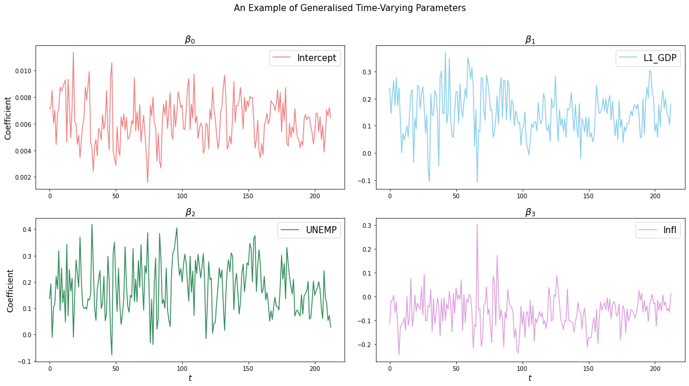

Usage
The following gives an instructive example on how to run MRF to generate forecasts and generalized time-varying parameters (GTVPs).
It is recommended that you see Docs, particularly the MRF module, before you proceed. You can proceed with the below as an example of how to get started.
Implementation Example
Let’s say our goal is to predict GDP (or change in GDP) using various macroeconomic indicators.
Additionally, say for example we want the variables L1_GDP, UNEMP and CPI to be time-varying.
To start, let’s read in our data.
data_in = pd.read_csv("/Users/MRF_fan/dataset.csv")
We can take a look at this data using display(data_in.head(5)):
GDP L1_GDP UNEMP CPI Growth SP500 NASDAQ Trend
index
0 0.019421 0.019014 0.016832 0.006728 -0.012917 0.004881 -0.005408 1
1 0.017679 0.019421 0.019014 0.016832 0.006728 -0.012917 0.004881 2
2 0.008996 0.017679 0.019421 0.019014 0.016832 0.006728 -0.012917 3
3 0.012210 0.008996 0.017679 0.019421 0.019014 0.016832 0.006728 4
4 0.003283 0.012210 0.008996 0.017679 0.019421 0.019014 0.016832 5
Let’s say we have 213 rows and we want to predict the last 50 observations. We can set up our oos_pos as follows:
oos_pos = np.arange(163,213)
Notice that our desired \(y_t\) is in column position 0, so we will pass y_pos = 0. Our desired \(X_t\) are in index positions 1, 2 and 3, so we will pass np.arange(1, 4) as x_pos. S_pos we will omit from our arguments, since we want all of our extra exogenous variables to be included.
If we want to speed things up, we can also select parallelise = True and n_cores = 3 to run the code across 3 cores on our machine.
Warning
Running in parallel across all cores can cause your computer to temporarily slow down
The remaining hyperparameters we have chosen are relatively standard and the user should see Docs if they want to know more details.
Now we are ready to implement:
MRF = MacroRandomForest(data = data_in,
y_pos = 0,
x_pos = np.arange(1,4),
B = 100,
parallelise = True,
n_cores = 3,
resampling_opt = 2,
oos_pos = oos_pos,
trend_push = 4,
quantile_rate = 0.3,
print_b = True,
fast_rw = True)
To get this running, we simply need to run the following command:
MRF_output = MRF._ensemble_loop()
Once our function has run through, we can access the output as a dictionary. For example, the following two commands will respectively return the forecasts and betas for the model.
forecasts = MRF_output['pred_ensemble']
betas = MRF_output['betas']
And we’re done. You now have MRF predictions and GTVPs and you’re ready to predict the next recession! Here’s a look at our output:
Firstly, the predictions:

And, last but not least, the GTVPs:
